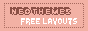

Links
Thank you for stopping by my page! Listed below are a few websites that I believe are super cool, super helpful, or both!
Play GIFs Stop GIFs
Link back?
Please remember to save this image and upload to your server, this helps prevent bandwidth from being used! Thank you for understanding!
Webrings / Cliques
OTF Doctor Strange
OTP :: Stephen Strange & Cloak
Neocities Neighbors
If you've already added me, please let me know through site comments or email! :D
Other sites that I follow are over here !
Out-of-Town Sites
A list of old sites I used to visit when I was younger!
The Fanlistings Network An entire repository of fanlistings that you can join.
The Anime Fanlstings A repository of anime/manga-related fanlistings that you can join.
Zombo.com Trust me on this ;)
Benedict Cumberbatch Name Generator Exactly what it says on the tin.
Resources
Pixels/Sozai:
Quite possibly the largest catalog of adorable pixel sites I've seen!
A collection of adorable pixels and emoji on Tumblr!
CSS/HTML/JS:
Perhaps one of the most famous webmasters on Neocities, and for good reason! She has a ton of stuff to help new Neocities users get started on their sites.
 A Neocities site that provides free layouts! Responsive, and great for beginners!
W3Schools How TO - Code snippets for HTML, CSS, and JavaScript I've seen people recommend just W3Schools, but if you want specific examples, this is the site for you!
Terribleideas" Site A repository of neat(?) CSS effects you can add to text.
HTML Symbol List A huge list of HTML symbols with their respective numbers and names.
Kaomoji.ru You like kaomojis? Of course you do! This is the largest database for kaomojis that I know of that you can copy and paste!
Graphics
A free toolset primarily used for creating and editing animated GIFs, but it does a TON of other stuff as well!
A graphics generator where you can make your own logos! Haven't used it myself, but it's really cool.
waifu2x A site where you can take almost any image and upscale it up to 2x with little or no loss of quality.
Become a Compression Sorcerer Neonaut's guide for compressing images to optimize your site.


 Doctor Strange
Doctor Strange "Chaotic Love Revolution"
"Chaotic Love Revolution"